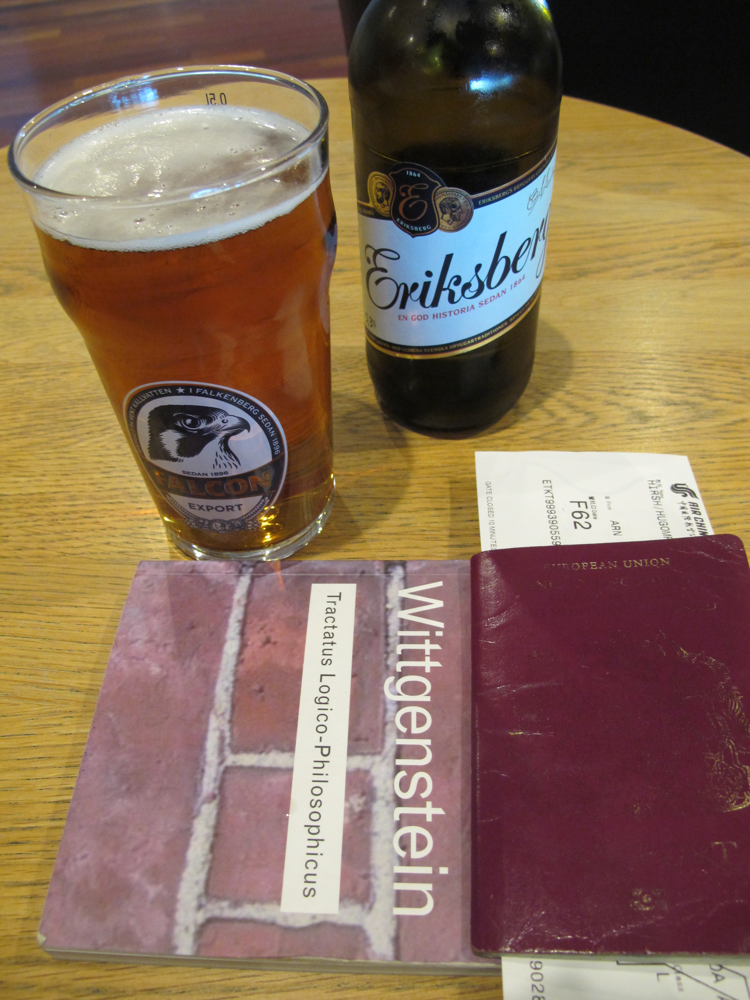

North Korea, Part 3 - Day 1
My Flight to China left in the evening, so I arrived at the airport in good time to get checked in. The tours you can book there will include everything from the moment you step on the plane to North Korea, to the moment you land back on Chinese soil again. Flights, hotel, meals etc, everything. The flight to Beijing was from 7pm until 9am (Beijing local time), and lasted around 9 hours. This meant that I would be awake for a whole day at work, then another 9 hours during the flight, and then from 9am in the morning at Beijing airport to 2:30pm when we flew to Pyongyang. Then again until later on that night. Getting to the airport early meant that I had time to indulge myself in something that no-one should go without if they are attempting to sleep on the plane.
